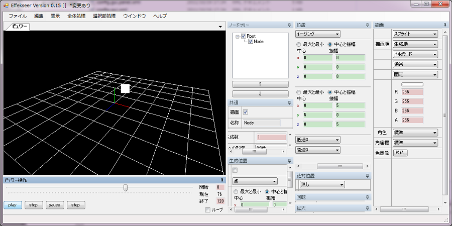
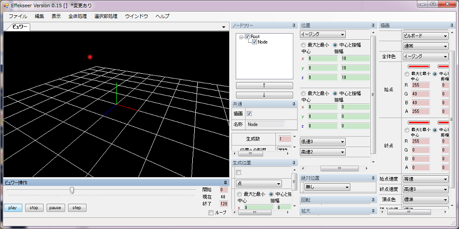

No01.粒子の生成
はじめに
本項目では、1つの粒子を生成し、ランダムに位置、速度、色等を変化させて表示することを目的としています。
バージョンによって配置が変化する場合があります。画面が表示されていない場合、メニューバー->ウインドウから画面を開く必要があります。
起動
編集ツールは「Tool/Effekseer.exe」です。早速起動してみましょう。起動されない場合、.NetFramework4.0(Full)や最新のDirectXエンドユーザーランタイムがインストールされていない可能性があります。インストールされていても起動しない場合、あまりにも昔のPCの場合は性能不足の可能性があります。
起動に成功した場合、以下のような画面が表示されます。

再生
「ビュワー操作」画面の「Play」ボタンを押してみましょう。そうすると「ビュワー」画面に白い正方形が表示されています。マウスの右を押しながら移動すると視点が回転、マウスのホイールを押しながら移動すると平行移動、マウスのホイールを前後させると拡大縮小することができます。どの角度から見ても、白い正方形のままです。

この白い正方形は「ノードツリー」画面に表示されている「Node」を表示しています。「ノードツリー」画面はこのエフェクトの全体の構成を表示しています。「ノードツリー」を左クリックすることにより、クリックされたノードのパラメーターを他の画面に表示するすることができます。また、今回は使用しませんが、右クリックでノードの追加、削除等ができ、そうすることにより複雑なエフェクトを生成することができます。次に、実際にパラメーターを編集してみます。
編集(位置)
まず、この白い正方形を動かしてみましょう。「ノードツリー」画面から「Node」を左クリックします。そうすると他の画面にNodeのパラメーターが表示されます。その中で「位置」画面があります。これはNodeのパラメーターにより生成されるエフェクトの位置を設定する画面です。(0,10,0)と入力し、Enterを押すか違う欄をクリックします。そうすると、高い位置に正方形が表示されます。

しかし、これでは移動しません。次に「位置」画面の「位置」と表示されているコンボボックスをクリックし、「位置・速度・加速度」を選択します。位置以外の項目でもありますが、本ソフトウェアでは設定を切り替えることにより別の動作を行うことができます。「位置・速度・加速度」では位置、速度、加速度の初期値をそれぞれ任意範囲でランダムに設定されるようにすることができます。実際に項目を見てみましょう。「最大と最小」「中心と振幅」という選択、及び「最大と最小」が選択されているときは「最大」という値と「最小」という値、「中心と振幅」が選択されているときには「中心」という値と「振幅」という値が表示されます。例えば、「最大と最小」のとき、「最大」が10、「最小」が-10だとすると、再生(正しくはその粒子が生成)するたびに10～-10の範囲でランダムな値が設定されます。「中心と振幅」のとき、「中心」が10、「振幅」が20だとすると、30(10+20)～-10(10-20)の範囲でランダムな値が設定されます。今回は、x方向の速度の振幅に1を設定します。すると再生するごとに左や右にランダムな速度で四角が移動するようになるのがわかります。

今度はコンボボックスから「イージング」を選択します。これの場合、始点と終点の位置を設定することができます。つまり、生成時に始点の位置に配置され、消滅する時に終点の位置に移動するようにできます。さらに、始点の位置と終点の位置は任意範囲でランダムで指定することができ、また、始点の速度と終点の速度を大まかに設定することができます。例えば、始点を低速、終点を高速、とすると消える寸前に大きく移動するようになります。今回は、下の図のように設定すると、ランダムに上の方に移動するようになります。
編集(描画)
現在、表示されるのはただの白い四角です。これでは面白みがありません。今度は「描画」画面から描画方法を編集してみます。色々描画方法はありますが、今回は初期設定の「スプライト」を使用します。スプライトは、色々なパラメーターを適用した四角を描画する設定です。
まず、色を設定してみましょう。「全体色」と「頂点色」それぞれ設定できます。実際に表示される結果は全体色×頂点色となります。例えば 全体色が白で、頂点色が赤の場合、最終的なその頂点の色は赤になります。全体色に関しては、ランダムな値やイージングも設定することができます。
また、「描画共通」画面から色／歪み画像に、表示する画像を設定することもできます。この表示する画像も最終的に描画する色は頂点色等の影響を受けます。最終的な結果としてはカラー画像の色×全体色×頂点色となります。ちなみに、画像は一辺の長さが1,2,4,8,16,32,64,128,256,512等、2の乗数のピクセル数であることが推奨されます。環境によっては正しく表示されなくなる可能性があります。
移動と色を設定した結果、以下のようなエフェクトができました。このエフェクトは「tutorial01.efkproj」として保存されています。
最後に
今回は、移動と描画のみについて説明しました。同じように「回転」「拡大」も設定することができます。なお、描画の設定によっては描画に適用されないケースもあります。ご注意ください。例えば「スプライト」の場合、「ビルボード」となっている部分を「固定」に変更しないと回転は適用されません。
また、本ツールでは試行錯誤しやすいように、再生中や一時停止中にもリアルタイムにパラメーターの変更は適用されます。ループ再生をしつつ、編集をしていくと効率が良くなります。